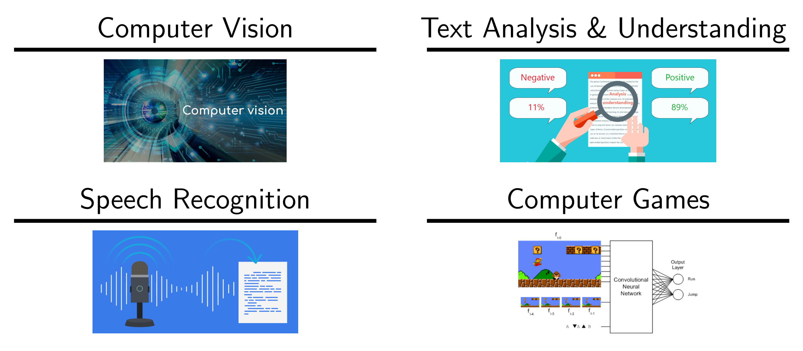
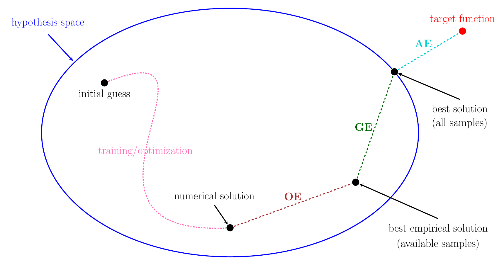

Research Interests
Deep neural networks have made significant impacts in many
fields of computer science and engineering, especially for large-scale and high-dimensional learning problems. Well-designed neural network architectures, efficient training algorithms, and high-performance computing technologies have made neural-network-based methods very successful in real applications.

Especially in supervised learning, e.g., image classification and objective detection, the great advantages of neural-network-based methods have been demonstrated over traditional learning methods. Understanding the approximation power of deep neural networks has become a key question for revealing the power of deep learning. A large number of experiments in real applications have shown the large capacity of deep network approximation from many empirical points of view, motivating much effort in establishing the theoretical foundation of deep network approximation. One of the fundamental problems is the characterization of the (optimal) approximation error of deep neural networks in terms of the network size measured in the width, the depth, the number of neurons, or the number of parameters.
Currently, I am quite interested in studying the approximation error.
Designing efficient optimization algorithms and analyzing the generalization bounds are two other separate future directions.
See this note for the introductions of the approximation error (AE), the optimization error (OE), and the generalization error (GE).
